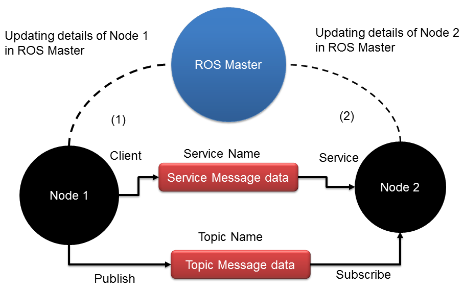

机器人操作系统
第一章
介绍
ros由一组工具软件构成，是一个元操作系统，特点:
- 消息传递接口：进程通信
- 硬件抽象：无需关注具体硬件
- 包管理：ros节点以包的形式组织起来，每个包由原码文件、配置文件、编译文件等构成
- 第三方库集成：Open-CV, PCL, Open-NI等
- 低级设备控制：控制I/O pin, 端口传数据
- 分布式计算：将计算任务分布到几块计算节点上
- 代码复用
- 语言独立：可用python, c++, Lisp
- 易测试：内建测试框架
- 扩展
- 免费
ROS概念
$组织等级\left\{\begin{aligned}
& ros文件系统\\
& ros计算图\\
& ros社区
\end{aligned}
\right.$
ros文件系统：ros文件在硬盘中如何组织
- package: ros包是ros框架下的个体单元，包含了：原码、第三方库、配置文件
- package manifests: 是一个*.xml文件记录了包的全部细节，例如：名字、描述、依赖
- message type: 是一个数据结构，定义*.msg文件中，该文件放在msg文件夹下
- service type: 是一个请求/应答服务，定义在*.srv文件中，该文件放在srv文件夹下
ros计算图：计算图是一个点对点的网络，基本特征有：节点node、主进程ros master、参数服务parameter server、ros对话ros topic、 消息message、服务service、袋bag
- 节点：表示进程
- 主进程：串联各个节点进程
- 参数服务：全局变量，所有进程都可访问
- ros话题：一对多通信模式（广播）在进程间通信，发送话题称为发表publish,接收话题称为订阅subscribe
- 服务：一对一通信模式（请求/回复）在进程间通信，发送请求端称为客户 client,回复响应端称为服务service
- 袋：通信格式

ros社区等级
- $分布distribution:发布版本\left\{\begin{aligned}
& ROS Melodic Morenia & &2018.05.23\\
&ROS Lunar Loggerhead & &2017.05.23\\
& ROS Kinetic Kame & &2016.05.23\\
& ROS Indigo Igloo & &2014.07.22
\end{aligned}
\right.$ - 仓库repositories：git
- 维基wiki：http://wiki.ros.org
- 邮件mail list：http://lists.ros.org/mailman/listinfo/ros-users
- 解答answer：https://answers.ros.org/questions/
本博客所有文章除特别声明外，均采用 CC BY-NC-SA 4.0 许可协议。转载请注明来自 和其光, 同其尘！
评论
ValineDisqus